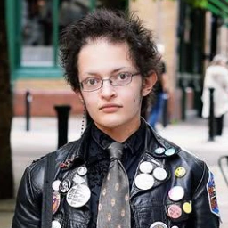
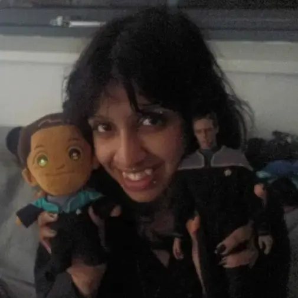
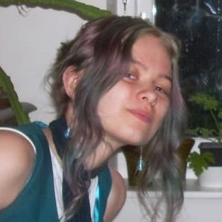

About Us
Science Fiction Society is a collaborative, student-led organization for SF creative works.
We host events for both fans and creatives, and collaborate with other societies like Film, Creative Writing, and Tabletop Society.
Additiionally, we appreciate close ties with the University's Science Fiction Archives and the Victoria Gallery.
Whether you're interested in the creative process behind Science Fiction works, fandom for things like Star Trek, the history behind the genre, or (most importantly) the science and research that constitute Science Fiction, come check us out!
Committee Members

PresidentAllen "Len" Little
Allen is a second year Computer Science student. He has been reading, watching, and writing science fiction since before he could remember.
Creating a new community for science fiction community has been his dream for years.
In his free time, he likes working on personal computers, collecting pins, and finding new books.

SecretarySashitra Murli
Sashi is a second year Microbiology and Infection student. Her love for science fiction originated from various visual novels she played as a child, and loves connecting with similar people in this society. Aside from working in the lab, Sashi loves sewing, drawing, and going dancing.

TreasurerViolet McNeill
Violet is a second year Game Design student. She has a particular love for scifi of the space and alien variety, and enjoys all the scifi themed creative outlets this society offers.
When not doing various arts and crafts, Violet likes climbing, programming, and video games.
Social Secretary
Mihail Bekriev
Misho is a second year Mechanical engineering student. He loves science fiction because it allows the authors to show our world and society through a lens that is often quite different to our own. He is very much into cyberpunk, the Metro games and books, and Fallout